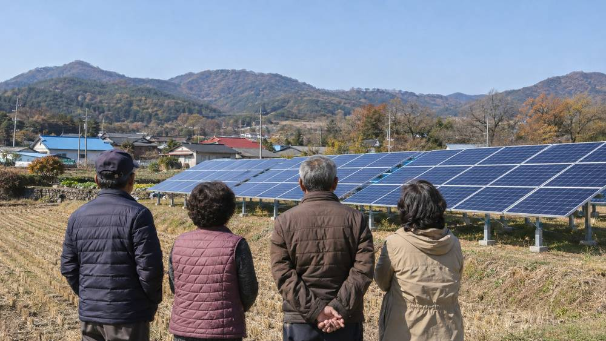

햇빛소득마을 528곳, 3차 공모 결과는 12월 말 발표

김성환 기후에너지환경부 장관이 11월 23일 서울에서 주민 대표 등 60여 명을 대상으로 연 간담회다. 부지·계통·자금 조건부 마을이 사례 발표를 맡았다.
기후에너지환경부는 11월 23일 오후 2시부터 서울 중구 한국전력 경인건설본부에서 햇빛소득마을 주민 간담회를 연다고 이날 밝혔다. 햇빛소득마을 추진단과 에너지 유관기관, 마을 주민대표 등 60여 명이 참석 대상이다. 1차 공모로 뽑힌 마을의 추진 현황과 건의·애로사항을 김성환 기후부 장관이 직접 듣는 자리다.
간담회는 2시간 일정으로, 추진단의 사업 현황 보고 뒤 네 마을이 5분씩 사례를 발표하고 67분 동안 건의와 자유토론을 하는 순서로 짜였다. 경남 김해시 초전마을은 바로 사업에 들어갈 수 있는 '즉시추진' 마을로 뽑혔다. 전북 완주군 서봉리 마을은 부지, 충북 음성군 오생2리 마을은 계통, 충남 아산시 돈포2리 마을은 자금 조건을 달고 선정됐다. 선도사례로 꼽힌 초전마을(김해시 진례면)은 1차 공모를 준비하면서 발전사업허가를 함께 받았고, 11월 말 태양광 시설 준공을 앞두고 있다.
기후부는 간담회 건의 가운데 부처 간 협업이나 제도 개선이 필요한 과제를 '재생에너지 보급 혁신 전담조직(TF)'에 올려 논의하기로 했다. 이 조직은 관계부처·공공기관·지방정부가 함께 꾸린 범정부 협의체다. 제1차 재생에너지 기본계획의 목표인 2030년 재생에너지 100GW, 2035년 발전 비중 30% 이상을 이루려고 만들었다. 김 장관은 "마을마다 처한 여건과 준비 상황이 다른 만큼 현장의 목소리에서 해답을 찾아야 한다"고 밝혔다.
정부는 지난해 12월 '햇빛소득마을 전국 확산 방안'을 국무회의에 보고했고, 올해 2월 범정부 추진단을 띄우며 민관 합동 현장지원단을 가동했다. 1차 공모(3월 31일~5월 31일)에서 87곳, 2차(6월 1일~7월 31일)에서 441곳을 뽑아 모두 528곳이 선정됐다. 9월 17일부터 10월 30일까지 접수한 3차 공모는 평가를 거쳐 12월 말 선정 결과가 나온다.
시민에너지 관점
528곳이 뽑혔지만, 이날 발표에 나선 네 마을 가운데 세 곳은 부지·계통·자금 조건을 달고 있었다. 계통 접속은 한전, 자금은 금융기관, 부지는 지자체가 열쇠를 쥐고 있어 주민 힘만으로는 풀기 어렵다. 전담조직에 올린 과제가 언제 어떻게 풀렸는지 마을별로 알려야 주민이 사업 일정을 세울 수 있다. 조건부 마을 주민들은 막힌 조건을 구체적으로 정리해 추진단과 지자체에 꾸준히 알리자.
출처: 기후에너지환경부 2026-11-23 보도자료 「현장의 걸림돌 걷어내고 '햇빛소득마을' 안착 속도 낸다」(태양광산업과, 붙임 간담회 개요) 원문 보기
출처: 경남신문 2026-10-15 이종훈 원문 보기